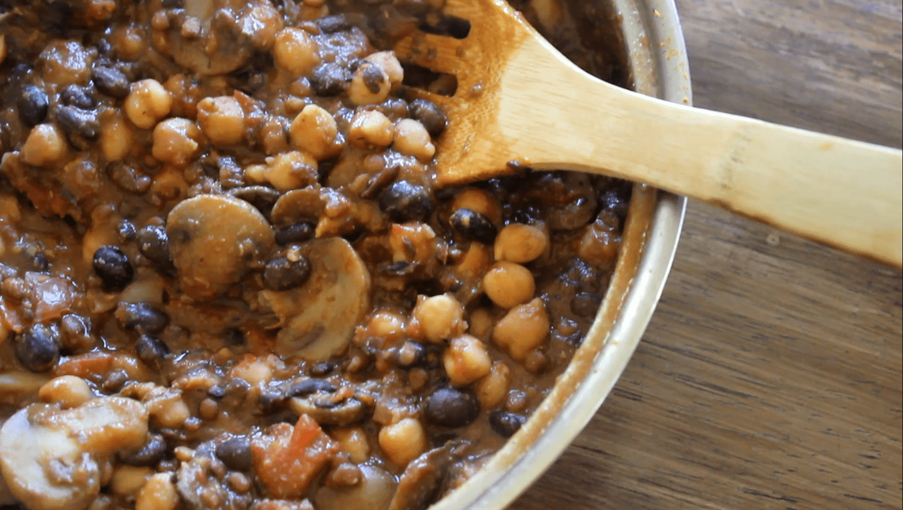
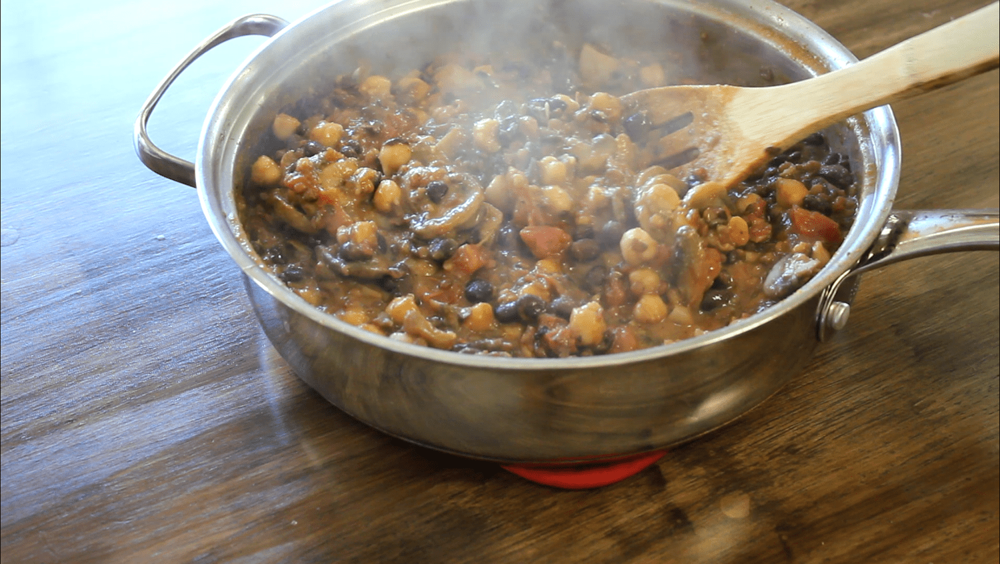
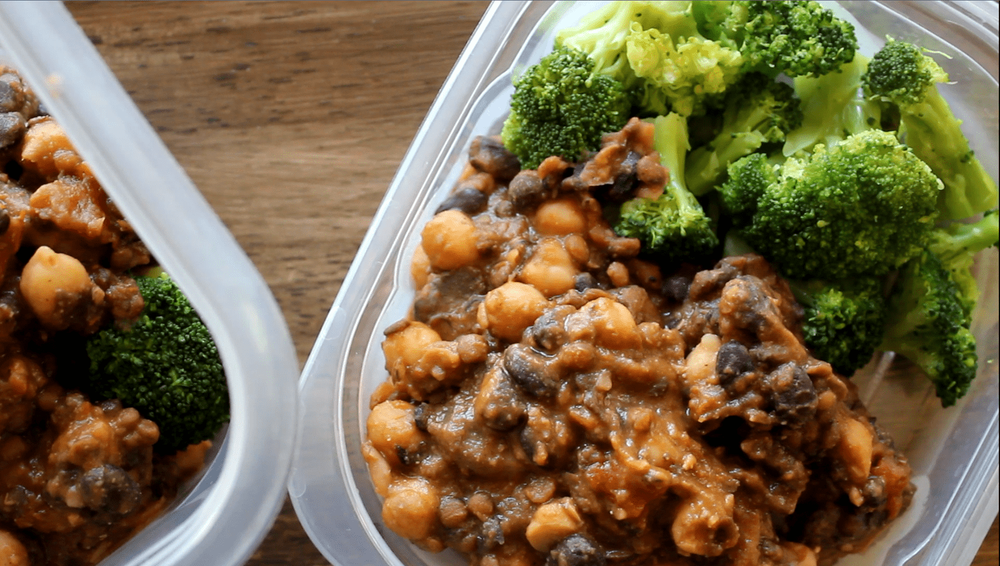

One Pot Bean and Mushroom Stew (vegan, gluten free)



No cutting or pre-cooking prep needed to make this comforting, flavorful and protein packed one pot bean and mushroom stew. With easy cleanup after (one pot!), it is perfect to prep for a week of dinners or quickly make a meal! Naturally gluten-free and vegan, you can make it your own by substituting your favorite types of beans, or adding extra vegetables!
I made this recipe for lunches at work this week! Since being back at work in the lab and having to meal prep every week, you may have noticed the meals are so extremely simple. I just can't be bothered to make elaborate recipes and everything every Sunday. I've kept it really simple with minimal prep, minimal cleanup, minimal thought. Hahaha. This recipe is great because you use the full can or package of everything and then just throw the package out! It only needs a single pot to cook, so cleanup was quick too.
The house smelled amazing by the time everything was finished cooking. It was reminiscent of part chili, part curry. It gave just an overall comforting, warm feeling through the house. You know that feeling of just wanting to curl into bed and be warm and comfortable all day? Yeah, that is what this smelled like, if that even makes sense. It does to me. The flavors come through so well and warm you from the inside out. I'm a big fan of this recipe, especially the chickpeas in it! Chickpeas are one of my favorite beans. Feel free to swap out the chickpeas and black beans for your favorite beans! Kidney beans would be a great option. You can also choose to add in other vegetables like broccoli, onion, peas, or more! I paired mine with broccoli on the side; rice or quinoa would also be a great side item.
If you're looking for a dinner or lunch recipe to prep this week, give this one pot bean and mushroom stew a go!
One Pot Bean and Mushroom Stew
Serves: 5
-
1, 8 oz package of sliced mushrooms
-
1 package steamed lentils (Melissa's brand, or cook 1.5 cups dry lentils)
-
1 can reduced sodium garbanzo beans (chickpeas)
-
1 can reduced sodium black beans
-
1, 14.5 oz can diced tomatoes
-
1 can coconut milk (full fat or reduced fat - I used reduced)
-
2 bay leaves
-
1 tsp sea salt
-
2 tsp garlic powder
-
2 tsp cumin
-
Spray a pot with nonstick spray and add your full package of sliced mushrooms. Cook over a medium heat, stirring occasionally.
-
Once the mushrooms have softened up and become slightly translucent, add the remaining ingredients! *you need to remember to remove the bay leaves at the end later
-
Mix everything together well, then bring to a boil. Once boiling, reduce the heat, cover the pot, and let it simmer for 30-40 minutes. The longer you let it simmer, the thicker it will become - so it's up to you!
-
Remove from heat, remove the bay leaves, then serve!